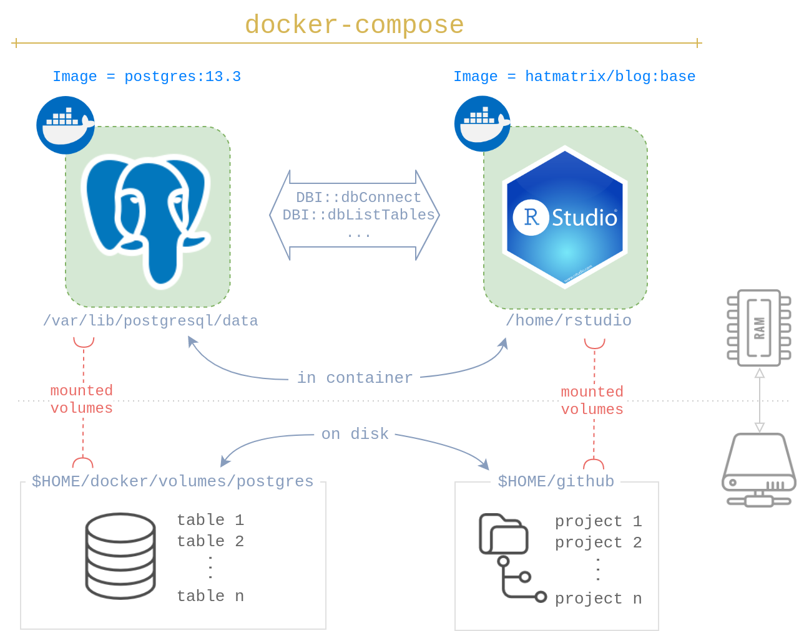

This is part one of the two part post related to Docker, Postgres databases and Anomaly data-sets.
In recent LinkedIn posts (mine and Rami’s Repost) and tweets, I asked the internet for their favorite datasets for anomaly detection problems, particularly in the time-series domain. I got lots of responses, and now have a massive amount of data to play with, thank you all!
To process this data, I wanted to setup my own Postgres server on my linux box. However, I also wanted the entire codebase to be portable & reproducible, so I can replicate it on my Mac as well. I setup everything using Docker and it works fantastic. If you’d like to learn how to do so, follow along my next two posts:
At the end of this tutorial, you’ll be able to rapidly setup a Docker based personal Postgres database. You will learn how to quickly deploy Postgres & RStudio using docker-compose. You will be able to access the DB in R / RStudio and begin development immediately. The process will be fully reproducible as it inherits all the benefits of working in Docker.
This text assumed you’re familiar with Docker and RStudio in a Docker environment. If you’re not, I recommend reading Reproducible Work in R first.
You will be launching two docker images:
postgres:13.3hatmatrix/blog:base (equivalent: rocker/rstudio )To permanently store your data beyond the life of the containers, you will have two mounted volumes, one for each container. In the example below, I choose:
$HOME/docker/volumes/postgres$HOME/github
None of these paths or docker images are special. You can customize them to your liking.
I use docker-compose to launch both postgres and RStudio services together. It’s convenient while also ensuring the postgres service runs first followed by RStudio. It’s very easy to get all the services up and pull them down using a few commands.
You need to run these steps the first time you’re setting up the postgres database. I’ve stored these steps in 00-postgres-init.sh.
You need a directory to store the postgres database in. While I chose $HOME/docker/volumes/postgres, you can choose any directory you’d like. Lines 3-10 take care of this for you:
# create directory if does not exist
if [ -d "$HOME/docker/volumes/postgres" ]
then
echo "Directory $HOME/docker/volumes/postgres exists."
else
echo "Error: Directory $HOME/docker/volumes/postgres does not exists."
mkdir -p $HOME/docker/volumes/postgres
fiNow it’s time to setup the database. You need two steps at a minimum to get started:
work and anomaly.To manipulate the database, you need a postgres server running to process the psql commands. You’ll launch one using docker run …. You need the correct volume mounted using -v. Next, we create the role and databases by piping psql commands into docker exec .... Then, we stop the container.
# launch the postgres image called 'post_setup',
# attach it to the local volume
docker run --rm --name post_setup \
-e POSTGRES_USER=postgres \
-e POSTGRES_PASSWORD=docker \
-d \
-p 5432:5432 \
-v $HOME/docker/volumes/postgres:/var/lib/postgresql/data \
postgres:13.3
# create a new role, and two databases
echo "CREATE ROLE rahul WITH PASSWORD 'pass' CREATEDB LOGIN;
CREATE DATABASE work; CREATE DATABASE anomaly;" | \
docker exec -i post_setup \
psql -U postgres
# stop the docker container
docker stop post_setupdocker-compose.yml in a local directorydocker-compose up -dprotip: to launch a browser directly into RStudio as well, run:
docker-compose up -d; firefox localhost:8787We’re creating two services, one called db and the other rstudio.
Let’s look at db first. Most of the arguments will look familiar if you’re familiar with docker run args. What’s new here is the restart: unless-stopped arg which tells docker to only start postgres if it’s currently stopped.
Note: change the source directory if you’ve customized it in your setup script above.
version: "3.3"
services:
db:
image: postgres:13.3
restart: unless-stopped
environment:
POSTGRES_DB: "anomaly"
POSTGRES_USER: "rahul"
POSTGRES_PASSWORD: "pass"
ports:
- "5432:5432"
volumes:
- type: "bind"
source: "$HOME/docker/volumes/postgres"
target: "/var/lib/postgresql/data"Now, the 2nd service called rstudio. Again, typical arguments you would have passed to docker run. The interesting argument here is depends_on which tells docker compose to only run this image after the database is up and running. Fantastic!
rstudio:
image: hatmatrix/blog:base
ports:
- "8787:8787"
- "3838:3838"
environment:
DISABLE_AUTH: "true"
volumes:
- type: "bind"
source: "$HOME/github"
target: "/home/rstudio"
depends_on:
- "db"Use postgres.R to test your connection. Run your DBI:: commands you would normally, except for one key difference. In the connection object, make sure the name of the host is the name of the database service you’ve chosen in docker-compose.yml.
con <- DBI::dbConnect(
drv = RPostgres::Postgres(),
dbname = "anomaly",
host = "db", # this needs to be the name of the postgres service
# (line 3 in docker-compose.yml)
user = "rahul",
password = "pass",
port = 5432
)